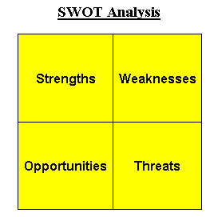

A tool that identifies the strengths, weaknesses, opportunities and threats of an organization. Specifically, SWOT is a basic, straightforward model that assesses what an organization can and cannot do as well as its potential opportunities and threats. The method of SWOT analysis is to take the information from an environmental analysis and separate it into internal (strengths and weaknesses) and external issues (opportunities and threats). Once this is completed, SWOT analysis determines what may assist the firm in accomplishing its objectives, and what obstacles must be overcome or minimized to achieve desired results. 
When using SWOT analysis, be realistic about the strengths and weaknesses of your organization. Distinguish between where your organization is today, and where it could be in the future. Also remember to be specific by avoiding gray areas and always analyze in relation to the competition (i.e. are you better or worse than competition?). Finally, keep your SWOT analysis short and simple, and avoid complexity and over-analysis since much of the information is subjective. Thus, use it as a guide and not a prescription.
{kind=link}